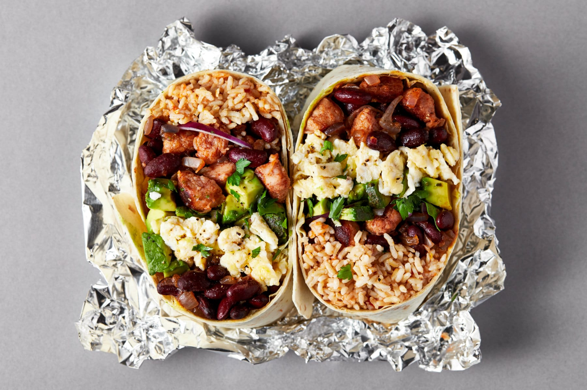

BURRITOS

Description
This healthy breakfast burrito recipe makes the perfect grab-and-go breakfast to last all week long. Simply pop them in the freezer, then grab one and warm it up in 2 minutes’ flat for the ultimate healthy, filling breakfast.
They’re totally customisable, too, so you control what goes inside. Fancy a bit of chorizo? No problem. Hankering for some hash brown in your breakfast burrito? Go for it!
Makes: 5 (just double the ingredients to make enough breakfasts for two people)
Ingredients
- 150g long grain or brown rice (dry weight)
- 100g tinned chopped tomatoes
- 1 large white onion (finely chopped)
- 10 medium eggs or 250ml liquid egg whites
- 10 reduced-fat pork sausages (chopped into 1cm cubes)
- 125g reduced-fat cheddar or Mexican-style cheese (grated)
- 250g tinned black beans
- 1 tsp. sea salt, black pepper and smoked paprika
- 5 wholemeal tortillas
- 50g pickled and sliced jalapenos
Steps
- First, boil the rice. Pour the dry rice into a large saucepan and cover with 200ml cold water and the chopped tomatoes. Bring to the boil, then turn the heat down to low, cover with a lid and simmer for 10-15 minutes until the rice has absorbed all the liquid.
- While you’re waiting for the rice to boil, cook the rest. Place a large, non-stick pan on a medium to high heat with a little coconut oil. Once the coconut oil has melted, add the chopped onion and fry for 3-4 minutes until the onions begin to brown.
- Add the sausage cubes and black beans to the pan with the paprika, salt and pepper, and fry for a further 3-4 minutes until crispy. Once cooked, pour into a bowl and set aside, and return the pan to the heat.
- Once the sausage mixture has cooked, fry the eggs. Crack the eggs into a bowl with a little salt and pepper, and whisk using a fork. Pour the eggs into the pan and fry for 3-4 minutes while stirring, until the eggs just about lose their gooiness. Once cooked, pour out into a bowl.
- Once all the components are cooked, assemble your burritos. Lay the tortillas out flat and divide the cooked rice into the middle of each in a short, thick line, leaving space around the edges. Add the sausage, onion and black bean mixture on top, then the eggs, grated cheese, and finally the jalapenos.
- Now fold the burritos. Fold the sides of each tortilla over the middle of the mixture, then fold the bottom edge tightly up to the middle. Roll the wrapped mixture tightly upwards towards the only open edge, and continue to roll until you have a tight burrito.
- Time to freeze the burritos. Wrap each burrito tightly with cling film and pop them into the freezer.
- When you’re ready to eat a healthy breakfast burrito. simply unwrap the burrito and wrap it with a piece of kitchen towel, then microwave for approx. 2 minutes or until hot through. Add half an avocado once warmed if you like.